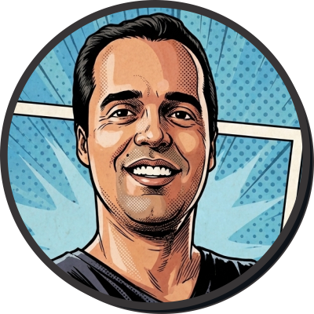

Identidade Visual e Branding
Identidade Visual com foco em diferenciação. Crio sistemas visuais pensados para que seu negócio se destaque no seu mercado local e transmita profissionalismo.
Identidade Visual com foco em diferenciação. Crio sistemas visuais pensados para que seu negócio se destaque no seu mercado local e transmita profissionalismo.
Desenvolvimento de sites profissionais, rápidos e estruturados para transformar visitantes em clientes.
Utilizo inteligência artificial para automatizar a criação de conteúdo, gestão de leads e organização de fluxos de trabalho, eliminando tarefas manuais e demoradas.

Sempre acreditei que a melhor tecnologia é aquela que funciona sem que ninguém precise explicar como. Com um pé no design clássico e outro na vanguarda da IA, traduzo complexidade em sistemas simples e visuais. Aqui, o foco é ser direto: seu negócio precisa de uma solução, e eu estou aqui para garantir que ela seja, no mínimo, impecável.
"Entregou uma identidade visual que, finalmente, reflete a essência da minha empresa. "Processo estruturado, comunicação eficaz e resultados superiores ao previsto."
Cerrado Tecnologia
O website que desenvolvido aumentou a captação de clientes e com isso, as vendas. É incomum encontrar um trabalho que gere resultados assim."
Só Sofá T-63 - Fabricação e Reforma de Estofados
"As automações com IA que o Fernando configurou, economizaram horas de trabalho da minha equipe. Valeu, me ajudou demais!"
Gabdreno Representações Comerciais